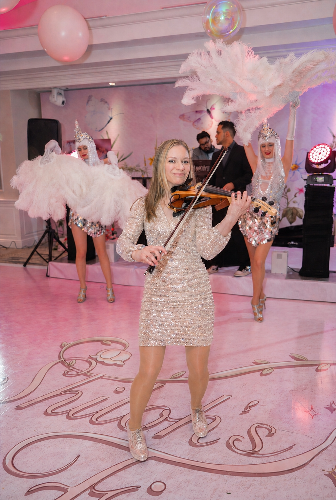

Let's Connect
Ceremonies · Cocktail Hours · Events



Ceremonies · Cocktail Hours · Events

Julie Schatz is a multi-instrumentalist, music producer, and songwriter with a bachelor's degree in jazz theory and performance.
She has worked on numerous recording projects and live performances as a violinist, pianist, songwriter, and beat maker. Her credits range from Wu-Tang to Disney. Based in NYC, she performs at weddings, private events, and corporate galas across New York, New Jersey, and Connecticut — drawing from a repertoire of more than 200 songs spanning classical, jazz, R&B, country, contemporary pop, and worship.
A fresh mix of electronic, R&B, and hip-hop sounds — coupled with deep roots in jazz.
Julie is a Roland artist and music educator, contributing content to platforms including Splice. Producers can browse the sample-pack catalog, and couples can read more about NYC, New Jersey, or Connecticut weddings.
Pricing depends on the event and venue. Wedding ceremony bookings in NYC start at $595 — that includes up to 3 song requests from the repertoire, a low-profile high-fidelity sound system, and prelude + ceremony coverage. The most-booked package combines ceremony and cocktail hour at $950 (NYC). The Soul Shades violin-and-piano duo starts at $2,400 for ceremony. Private events, proposals, and corporate galas are priced separately. Travel is included within NYC. For a full breakdown, see the rate sheet — and for a custom quote tailored to your venue and event, submit an inquiry. Typical response within 24 hours.
For Saturday weddings in peak season (May–October), 6–12 months out is typical, with the most-requested venues filling earliest. For weeknight events, intimate ceremonies, off-season dates, and corporate bookings, shorter timelines are usually fine — sometimes as little as 3–4 weeks. The earlier you reach out, the more flexibility there is on custom arrangements and ceremony rehearsals.
Yes — and every booking already includes up to 3 song requests from the repertoire of 200+ songs. For songs outside the repertoire, Julie can learn and prepare new material with at least 6 weeks of lead time (a custom-song fee applies — see the rate sheet). For featured arrangements where Julie plays the song's vocal melody on violin by memory rather than over the recording, an instrumental-version fee applies. Browse the full repertoire to see what's already prepared, and send the song reference at the time of inquiry.
A solo violinist gives an intimate, conversational sound that fits ceremonies of any size and reads beautifully on video. A string quartet adds harmonic depth — best for very large rooms or guests who want a fuller classical texture. Julie's solo offering is amplified through a low-profile, high-fidelity PA, which means it carries cleanly even in large outdoor or stone-walled venues — without the cost or staging footprint of four players. For couples who specifically want quartet coverage, that can be arranged on request.
Yes — NYC-based, with regular bookings across all of NYC, New Jersey, Connecticut, and the Hudson Valley. Travel is included for NYC bookings (Manhattan, Brooklyn, Queens, Bronx, Staten Island, Hoboken, Jersey City). A second tier covers Long Island, Westchester, Northern New Jersey, and Greenwich at standard zone pricing. The Hudson Valley and beyond are custom-quoted based on venue distance — please confirm the address at the time of inquiry so the quote reflects the correct travel scope. Destination events outside the tri-state region are available on request.
Yes. Every booking includes a low-profile, high-fidelity PA system suited to the venue — wired XLR for indoor rooms, battery-powered amplification for outdoor lawns and rooftops, and wireless lavalier mics for officiants and vows when needed. Julie also travels with a professional electric violin and a portable keyboard rig when no venue piano is available. The setup is designed to disappear visually while filling the space cleanly on audio.
Yes — that's the most-booked configuration. Julie performs solo violin for the ceremony (prelude, processional, vows, recessional) and switches to jazz piano or violin-and-keyboard for cocktail hour. The single-musician approach keeps the energy continuous, simplifies coordination with planners, and is significantly more cost-effective than booking separate ensembles for each segment. Combined ceremony + cocktail packages start at $950 in NYC, $1,100 in Long Island / Westchester / Northern New Jersey / Greenwich, and are custom-quoted for the Hudson Valley and beyond.
To secure a date: a signed performance agreement and a 50% non-refundable retainer are required. The retainer holds the date and covers preparation, custom arrangements, and rehearsals. The remaining balance is due before the event. Date changes are accommodated when possible based on calendar availability; details are spelled out in the agreement so there are no surprises. Full terms are reviewed during the planning call before signing.